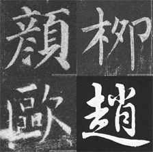
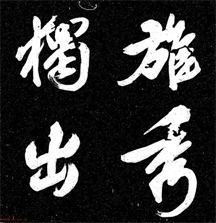
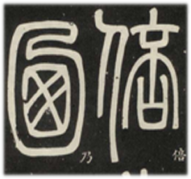

字体演变
甲骨文
汉隶
晋唐楷书体系
甲骨文是中国的一种古老文字，主要用于商代（约公元前1600-1046年）的卜卦和记录。它是刻画在甲和兽骨上的文字，最早出土于河南省安阳市的殷墟，是汉字的早期形式，具有重要的历史和文化价值。甲骨文的研究形成了一个门学科——甲骨学，至今已发现超过15万片甲骨。
狭义的汉隶是指西汉使用最广泛的隶书体，五凤元年简（汉22）和定县汉简（汉23）是其成熟形态。汉隶较古隶规范，又不像八分那样具有装饰性。西汉及东汉的通用书体。编年资料显示，汉隶有12种类型，即10—12、23、25—27、29、32、31×1、33—34。汉隶的特征为：取横势，突出横画，竖平短直，竖钩呈垂露。其结构处理类似于柳公权先生总结的“平正为主，险绝为辅”。纵横分布疏密有致。
唐楷集魏晋南北朝楷法为一体，形成了字体严肃端庄，笔划平稳凝重，结构严谨，法度森严的风貌。初唐有虞世南、欧阳询、褚遂良、薛稷诸家，盛唐有颜真卿、柳公权。欧阳询的《九成宫醴泉铭》，用笔刚健峻拔，笔画方劲，结构开张宽博。颜真卿的《多宝塔碑》《祭侄文稿》，端庄雄伟，雍容华贵。柳公权的《玄秘塔碑》，结构严整，笔画瘦劲挺拔，刚柔并济。褚遂良的《雁塔圣教序》，精工秀雅，遒媚劲健。总之，唐楷法度严谨，笔画厚重，朴实端庄。
书法体系

欧阳询（557-641），字信本，书法
成就以楷书为最，笔力险峻，结构独异，
世称“唐人楷书第一”，世称“欧体”，
代表作有《九成宫醴泉铭》等 。颜真卿
（709-785），字清臣，是继二王之后成
就最高，影响最大的书法家。书法广收博
取，一变古法，行以篆籀之笔，化瘦硬为
丰腴雄浑，结体宽博而气势恢宏，骨力遒
劲而气概凛然，是书法美与人格美完美结
合的典例，世称“颜体”。代表作有《颜
勤礼碑》、《颜氏家庙碑》、《多宝塔
碑》、《麻姑仙坛记》等。柳公权（778
-865），字诚悬，世称“柳少师”。结
体遒劲，字字严谨，以瘦劲著称，以行书
和楷书最为精妙，世称“柳体”。代表作
有《玄秘塔碑》和《神策军碑》。

苏黄米蔡，即“宋四家”——苏轼、
黄庭坚、米芾、蔡京，此四人被认为是最
能代表宋代书法成就的书法家。
也有学者认为“蔡”应为北宋初年
的书法家蔡襄。但就古人十分看重的“
年齿”排辈而言，“蔡”若为蔡襄，则“
蔡”应当排在“苏”之前。“苏、黄、
米”皆按年齿排列，作为北宋末年人的
蔡京是为“蔡”，应当毫无争议。
而后人认为蔡是指蔡襄，是因为蔡
京的名声太臭，导致徽宗亡国，历史地
位无法与前几位相提并论，故后人更加
喜欢认为蔡指蔡襄。
台北故宫纪录片翰墨风雅北宋四家专
题中，北京故宫博物院书画部副研究员金
运昌先生在片中也强调了这一说法。

邓石如是清代篆刻家、书法家，邓
派篆刻的创始人。 以下是他的简介：
基本信息：邓石如，初名琰，字石如，
后更字顽伯，号笈游道人、完白山人等，
安徽怀宁县白麟畈人。 篆刻成就：邓石
如是邓派篆刻的创始人，他少时便喜好
篆刻，曾客居金陵梅镠家八年，期间尽
摹所藏秦汉以来金石善本，最终自成一
家，世称邓派。 他的作品《完白山人篆
刻偶存》传世。 书法造诣：他擅长四体
书，尤其长于篆书，以秦李斯、唐李阳
冰为宗，稍参隶意，被称为神品。
笔墨密码
执笔法演变
墨分五色
宣纸工艺
东汉时期，握管式的执笔法主流，主要使用三指斜执笔法。
晋朝逐渐过渡到二指单钩法，南北朝时期则出现了更多种类的执笔方式。
唐代，单钩法着重使用，尤其是二指单钩法，五代时期相关技术又有了新的发展。
宋代，双钩式执笔方法逐渐崭露头角，执笔方法的演变与书写工具的改良密切相关。
这些变化不仅反映了书法艺术的发展，也与社会文化和书写环境的变化息息相关。-1046年）的卜卦和记录。它是刻画在甲和兽骨上的文字，最早出土于河南省安阳市的殷墟，是汉字的早期形式，具有重要的历史和文化价值。甲骨文的研究形成了一个门学科——甲骨学，至今已发现超过15万片甲骨。
墨分五色，即焦、浓、重、淡、清。 这五色在书法与绘画中各具特色，代表着不
同的层次与情感。 焦墨色浓重而深沉，常用于表现物体的暗部或强调力量感；浓
墨则色泽饱满，富有生命力，适合描绘物体的主体部分；重墨稍显淡雅，常用于
过渡或表现物体的阴影；淡墨轻盈柔和，适合表现物体的亮部或细腻纹理；清墨
则色淡如水，常用于渲染背景或营造氛围。 唐代以后，墨分五色更多地是谈论墨
色的深浅，常常指 焦、浓、重、淡、清。
选材：主要使用青檀树皮和沙田稻草作为原材料，这些材料经过严格挑选以确保质量。
制浆：将青檀皮和稻草分别处理，通过多道工序制成浆料。
捞纸：将浆料捞取成纸，形成纸张的基础。
晒纸：将捞好的纸张进行晒干，以确保其质量和耐久性。
剪纸：最后对纸张进行剪裁，完成制作。
这种传统工艺确保了宣纸的优良特性，如“墨韵万变”和“纸寿千年”，使其成为书法和
绘画的最佳载体。